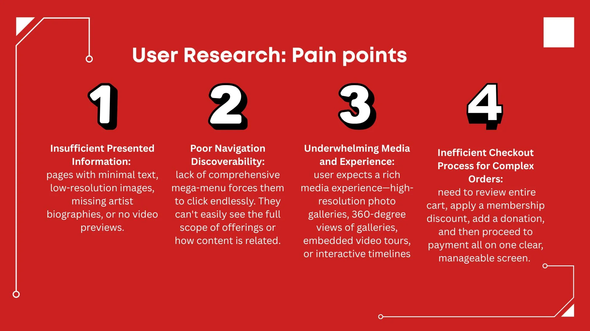

Project Overview
"A great museum experience doesn't start at the entrance—it starts the moment someone considers going. This project builds a digital pathway that turns that consideration into a confident, booked visit."
The Problem: Understanding the User
Museum visitors often feel overwhelmed by large spaces and generic information, leading to missed exhibits and a fragmented cultural experience.
User Personas
The Family Culture Planner
“I’ll bring my grandson all day—just give me clear access info, a quiet spot to rest, and a way to print or show our tickets without fuss.”
- Plan ahead for tickets, parking, step-free routes
- Look for family-friendly activities
- Need access to bilingual content, large-text, high-contrast.
- Identify quiet/sensory-friendly times
Social Event Planner
“If I’m going to cross town, I want to know it’s worth it—show me what’s on tonight, how crowded it’ll be, and make the ticket a two‑tap buy.”
- Discover exhibitions, talks, late nights this week
- Share events and save exhibits to a personal list
- Treats museums as social third places
- Reserve entry tickets with friends via digital wallet
The Core Design Challenge
Museum patrons, whether planning a detailed family trip or a spontaneous social outing, struggle with digital platforms that create more stress than excitement, making the idea of a visit feel more complicated than it's worth.
* The Carry Out Process
Insights Captured from User Research


While mobile end users, who perform spear-sharp, direct moves and focus on one task, desktop end users prefer a detailed and exploratory full overview of all possibilities.
Ideate the Major Information Architecture

The user-centered sitemap is built on three pillars: Visit for practical needs, Exhibitions & Events for discovery and booking, and Learn for deeper engagement. This intuitive flow seamlessly guides patrons from inspiration to action.


This mobile flow ( for both app and desktop ends) demonstrates a user-centric ticket reservation system designed for clarity and efficiency. The experience guides patrons seamlessly from event discovery to a secure checkout, minimizing friction with clear calls-to-action and a simple guest path.
The Solution
The final design features personalized onboarding, interactive blue-dot navigation, and context-aware audio tours that adapt based on user location and interests.

Personalized home screen

Interactive map with navigation

Exhibit information screen
Interactive Prototype
Experience the full user flow with our interactive Figma prototype
Try the PrototypeResults & Impact
Increase in task completion rate during final usability testing
User satisfaction score for navigation experience
"This is so much more intuitive than the museum's current app. I'd actually use this every time I visit." - Usability Study Participant
Key Learnings
This project taught me the importance of testing navigation patterns early. I assumed my initial icon-based navigation was clear, but user feedback revealed significant confusion. Moving forward, I always include label-based navigation options and test them thoroughly with diverse user groups.
The experience reinforced that even seemingly universal concepts like "map pins" need validation through user testing, especially when designing for broad audiences with varying levels of technical comfort.